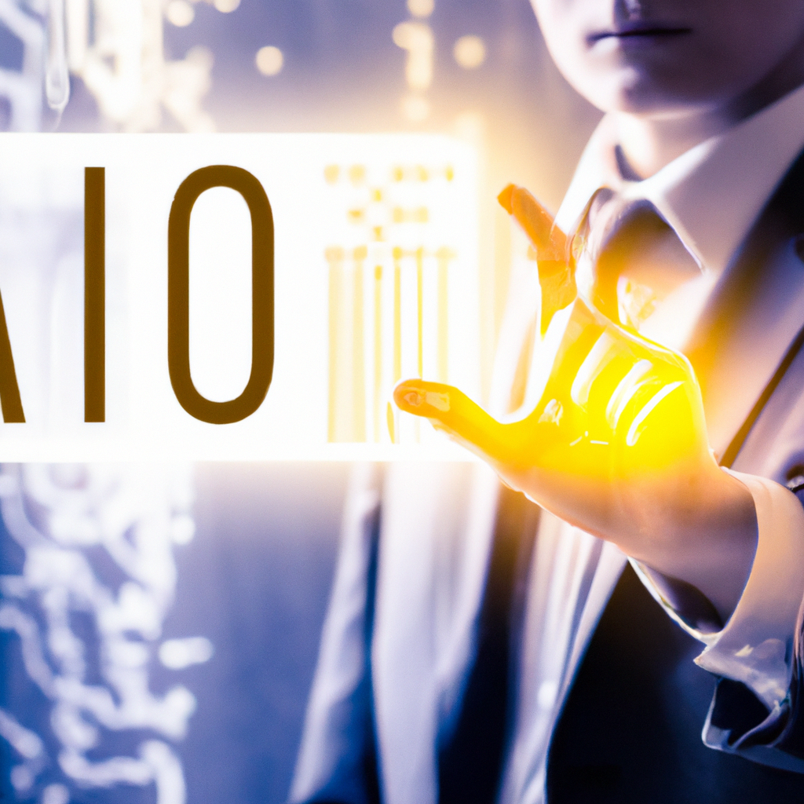

Why AI will never replace the CIO
The role of the CIO is changing rapidly with the rise of digital technologies and their increasing complexity. AI and machine learning have the potential to revolutionize how businesses operate, but they will never be able to replace the CIO.
The CIO is a strategist and a leader who understands the importance of aligning business objectives with IT strategies. They need to be able to see the big picture, and identify the opportunities and challenges that come with technology. AI and machine learning can’t replace this strategic thinking.
The CIO is also a collaborator. They need to foster relationships and work with other departments to ensure that the technology is being used to its fullest potential. AI and machine learning can’t replace this interpersonal skillset.
The CIO is a visionary. They need to be able to anticipate changes in the industry and be able to react quickly. AI and machine learning can’t replace the vision and creativity of a CIO.
AI and machine learning can be powerful tools for the CIO, but they will never be able to replace the CIO. The CIO needs to have a unique combination of business acumen, interpersonal skills, and a vision for the future. These qualities can’t be replicated by AI and machine learning, and that’s why the CIO will always be an invaluable asset to any organization.